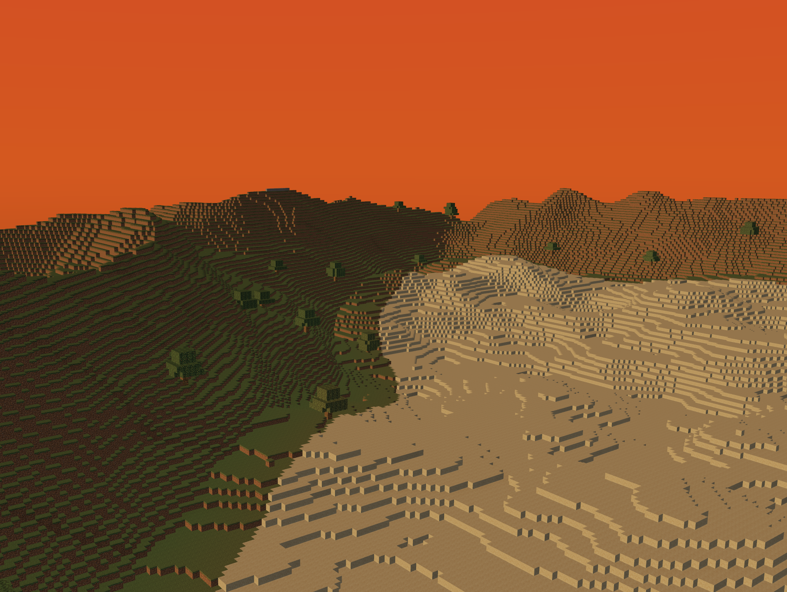
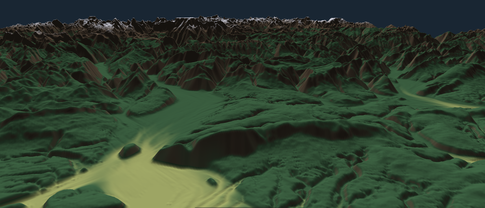
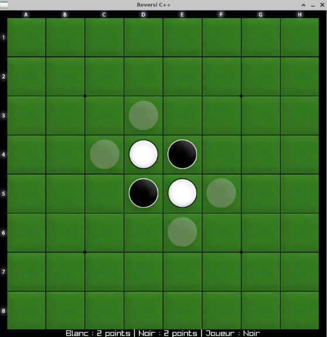
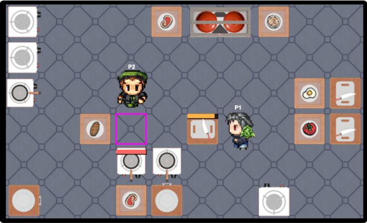

Projets Réalisés
Sélection de travaux techniques et académiques

Moteur de Portail & Génération
Clone technique de Portal avec génération procédurale, physique avancée, clonage visuel et illumination globale par SH Probes.
Analyse technique →
Voxel Game Engine
Moteur de voxels optimisé : Multi-threading, architecture ECS, rendu PBR, Greedy Meshing et Occlusion Culling.
Analyse technique →
Simulation d'Érosion Temps Réel
Simulateur d'érosion hydraulique et thermique, gérant dynamiquement les flux d'eau et les transports de sédiments.
Analyse technique →
IA de Réflexion - Reversi
Développement d'un moteur de jeu et d'une IA capable d'anticiper et de planifier des stratégies à plus de 8 coups d'avance.
Analyse technique →
OvercookMini : IA & PCG
Environnement de simulation multi-agents (Python). Moteur 2D custom, génération procédurale de cartes (PCG) et IA coopératives avec pathfinding dynamique.
Analyse technique →